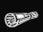
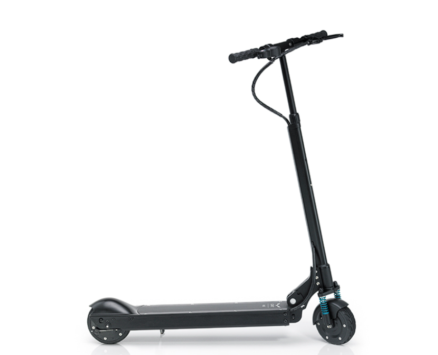

Asphalt Arkade
Drifte durch eine riesige Stadt, sammle Geld, kaufe neue Autos und entkomme deinen Verfolgern.
SPIELEN

Mattenwurf
Fahre durch die Vorstadt und liefer Zeitungen aus
SPIELEN

E-Scooter Klicker
Klicke den E-Scooter, baue deine Flotte auf und kaufe Power-ups
SPIELEN